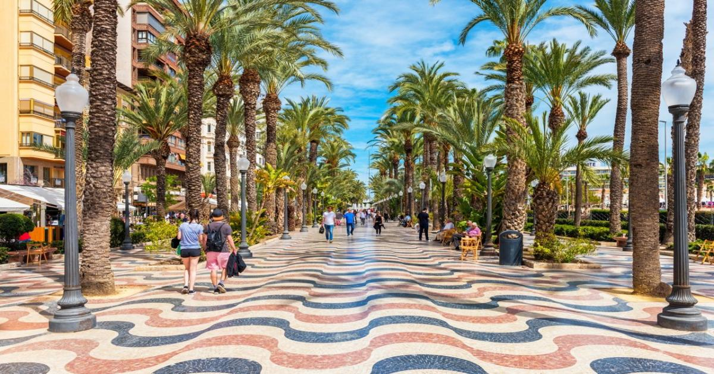
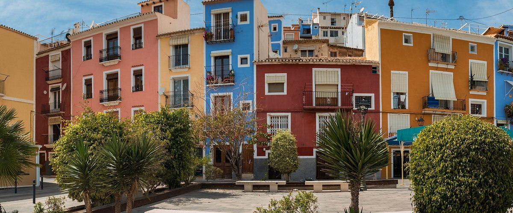

Alicante es una vibrante ciudad mediterránea que destaca por su excelente clima, con más de 300 días de sol al año, y por su privilegiada ubicación junto al mar. Sus playas de arena fina, como la Playa del Postiguet o San Juan, son uno de sus mayores atractivos y ofrecen un entorno ideal tanto para el descanso como para la práctica de actividades acuáticas. La ciudad combina a la perfección su rico patrimonio histórico con una animada vida moderna. El imponente Castillo de Santa Bárbara, situado en lo alto del monte Benacantil, ofrece unas vistas espectaculares de la ciudad y del litoral, y es uno de los símbolos más representativos de Alicante. El casco antiguo, conocido como el Barrio de Santa Cruz, invita a pasear por sus estrechas calles llenas de encanto, tradición y color.
Alicante también es un referente gastronómico, con una cocina basada en productos del mar y el famoso arroz en sus múltiples variedades. A ello se suma una amplia oferta de ocio, festividades populares como las Hogueras de San Juan, y una infraestructura moderna que la convierte en un destino atractivo tanto para el turismo como para la vida diaria. Gracias a su puerto, su aeropuerto internacional y sus excelentes conexiones, Alicante es una puerta de entrada al Mediterráneo y uno de los principales núcleos urbanos y turísticos de la provincia.
Visita aqui sus diferentes lugares famosos: